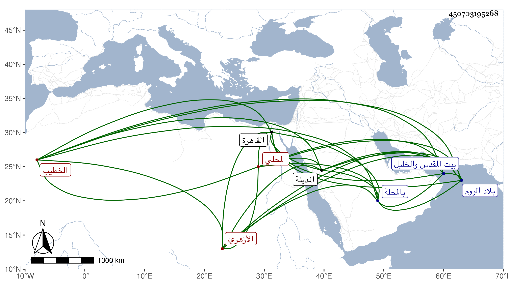

0902Sakhawi.DawLamic.ITO20230111-ara1.EIS1600.450703195268
Biography ID: 450703195268
418
محمد بن علي بن إسمعيل بن رضوان الشمس المحلي ثم الأزهري الخطيب . مولده قبيل الخمسين بالمحلة وحفظ بها القرآن عند الفقيه أحمد بن خليدة وقرأ لأبي عمرو على الشيخ عبد الله الضرير ، ثم قدم القاهرة واشتغل عند البكري والعبادي وغيرهما كالزين الأبناسي وقرأ علي كثيرا في البخاري وغيره وكذا قرأ على الديمي وجود الخط القرآن وقرأ به في الأجواق رياسة وغيرها ، وتكسب بالشهادة وقتا وقرأ على العامة بالأزهر وغيره ، واختص بتمر الحاجب وأم به بل سافر معه في توجهه مع العسكر لسوار أولا وثانيا وكذا انتمى لجانبك حبيب وسافر معه إلى الروم حين كان الرسول لصاحبه في سنة تسعين وزار في رجوعه بيت المقدس والخليل ولشاهين الجمالي وسافر معه إلى المدينة النبوية حين ولي مشيخة الخدام بها وجهزه من هناك إلى العجم لأوقافها ولخير بك من حديد وقرره شيخ سبعة مع الذكر بالأزهر وله في ذلك كله حكايات ، وصار يتجر في غضون ذلك ، وعنده سرعة حركة وخفة روح .
